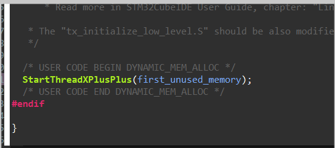
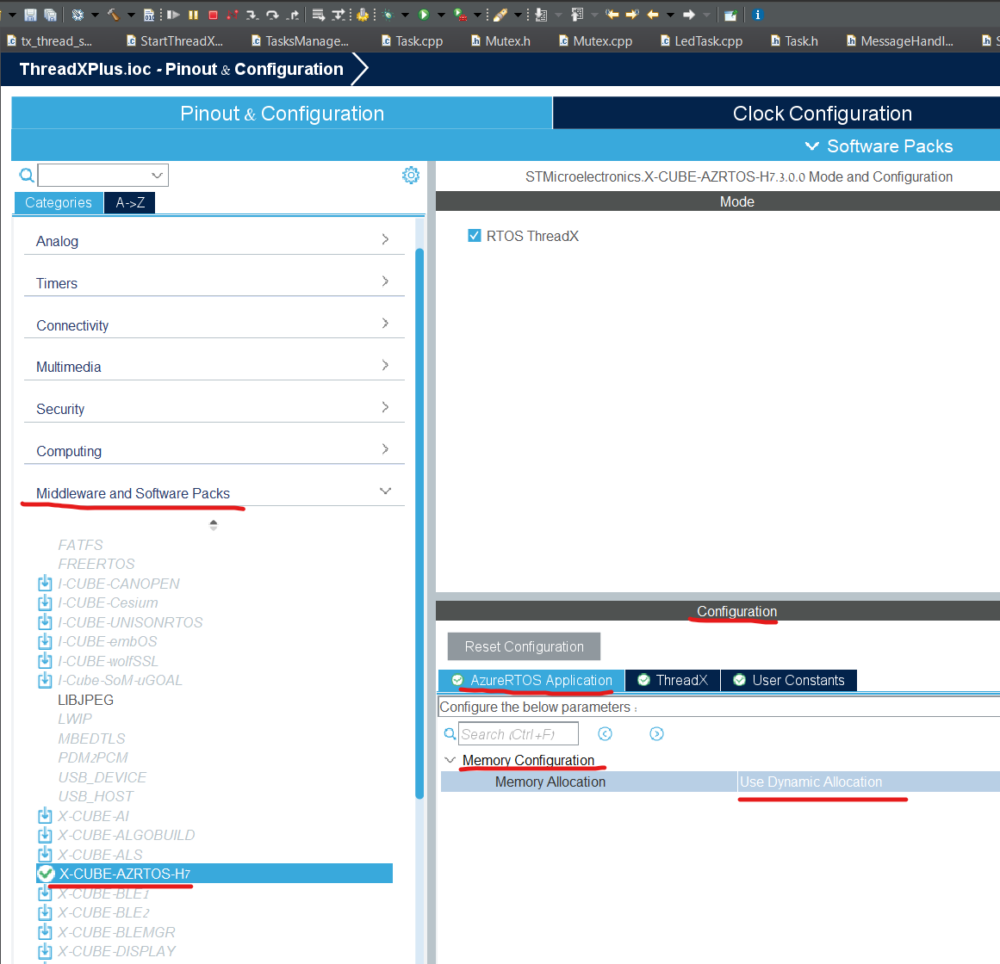
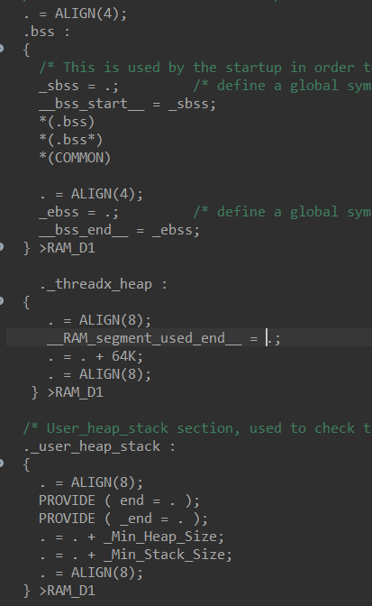

Memory manager
This package is optionally.
It's give you easy way to init the threadX pool of bytes and override the new and the delete function
Note: in order todo that you will need to change the threadX configuration to use "dynamic allocation", and you also need to config the ld file to allocate the ram section for the pool, the step 2 and 3 and 4 in this tutorial is for that but work only for STM32H743, if you have different MCU you will need to figure it out yourself how to do that (again you have a lot tutorial over the internet).
1) Go to HW.h file and add the define '#define MEMORY_MANAGER_ENABLE'
you also need to define MEMORY_MANAGER_POOL_SIZE with the size of the memory pool,
for example if we want pool of 64000 bytes, you will need to add next lines to HW.h file:
#define MEMORY_MANAGER_ENABLE
#define MEMORY_MANAGER_POOL_SIZE (64000)
2) Go To file app_azure_rtos.c to function VOID tx_application_define(VOID *first_unused_memory) and move the function StartThreadXPlusPlus(first_unused_memory); to end of the function: 
3) Now you need to config the ThreadX to work with dynamic allocation,
Go to project explorer and double click on the XX.ioc file (XX is the name of you project), This will open the configuration window, and the the right side of the screen select the Middleware and Software Packs than select X-CUBE-AZURES-H7, it will open two screens, In the bottom screen (Configuration) select the tab AzureRTOS Application inside the tab open the list of Memory Configuration, and set the field Memory allocation to Use Dynamic Allocation 
than save the file, File->save
4) Now we need to allocate space in the RAM for the memory, you need to go to project explorer of your project and go to file STM32xxx_FLASH.ld (the xxx will be the name of you MCU model), you need to place new block of ram that have the size of the memory pool and save the size into variable __RAM_segment_used_end__ , this block should be between the block of bss and _user_heap_check.
For example let assume that we want to allocate 64000 bytes, than we need to add next block:
._threadx_heap :
{
. = ALIGN(8);
__RAM_segment_used_end__ = .;
. = . + 64K;
. = ALIGN(8);
} >RAM_D1
and it should be between bss and _user_heap_check, so it look like that 